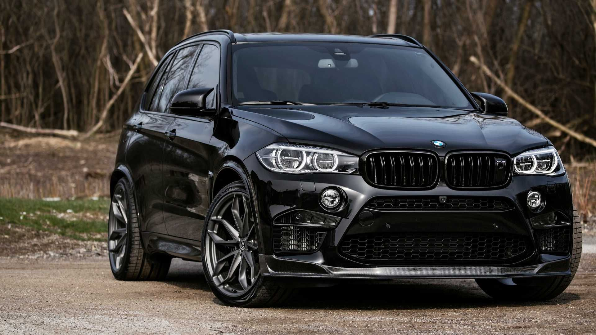

Технические характеристики
Тип: 4.4 л V8 с двойным турбонаддувом (S63)
Мощность: 625 л.с. (стандартный X5 M – 600 л.с.)
Крутящий момент: 750 Нм (доступен с 1800 об/мин)
Разгон 0-100 км/ч: 3.4 сек (с Launch Control)
Разгон 0-200 км/ч: 11.3 сек
Привод: M xDrive (полный с заднеприводным режимом 2WD)
МКоробка передач: 8-ступенчатый автомат M Steptronic
Краткая история BMW X5M
1. Первое поколение (E53, 1999–2006)
- Дебют в 1999 году – первый кроссовер BMW.
-Платформа: частично заимствована у E39 (5 серии).
-Двигатели:
3.0i (231 л.с.)
4.4i V8 (286 л.с.)
4.6is V8 (347 л.с.) – прототип будущих M-моделей.
-Полный привод xDrive (с 2003 года).
2. Второе поколение (E70, 2006–2013)
- Увеличенные габариты, третий ряд сидений (опция).
-Первый X5 M (E70, 2010) – 4.4 л V8 битурбо (555 л.с.).
-Появились гибрид (X5 xDrive40e) и дизель (X5 xDrive35d)
3. Третье поколение (F15, 2013–2018)
- Облегченная платформа, новый дизайн.
-X5 M (F85, 2015) – 575 л.с., разгон 4.2 сек до 100 км/ч.
-Технологии: iDrive 5, адаптивная подвеска..
4. Четвертое поколение (G05, 2018–2023)
-Платформа CLAR (алюминий + карбон).
-Гибриды (xDrive45e, 394 л.с.).
-X5 M (F95, 2020) – 4.4 л V8 (600 л.с.), разгон 3.8 сек.
5. Пятое поколение (G65, с 2024)
-Полностью электрическая версия – iX5 Hydrogen (на водороде).
-Гибриды с увеличенным запасом хода.
-Цифровая панель iDrive 8.5.
BMW X5M Competition‚Äì —ç—Ç–æ —Å–∞–º—ã–π –º–æ—â–Ω—ã–π SUV –≤ –ª–∏–Ω–µ–π–∫–µ BMW M. –ü—Ä–∏ —Ç–µ—Ö –∂–µ 625 л.с., —á—Ç–æ и у M5, –æ–Ω –≤—Å–µ–≥–æ –Ω–∞ 0.1 сек –º–µ–¥–ª–µ–Ω–Ω–µ–µ –¥–æ 100 км/ч, –Ω–æ –ø—Ä–µ–¥–ª–∞–≥–∞–µ—Ç –ø—Ä–æ—Å—Ç–æ—Ä–Ω—ã–π —Å–∞–ª–æ–Ω и –≤–Ω–µ–¥–æ—Ä–æ–∂–Ω—ã–µ –≤–æ–∑–º–æ–∂–Ω–æ—Å—Ç–∏. üöôüí®